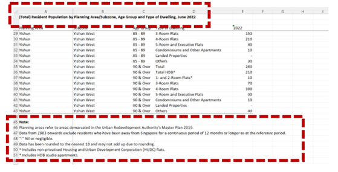
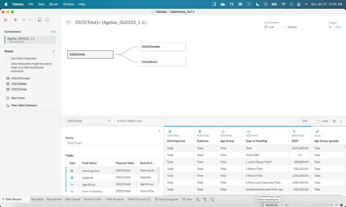
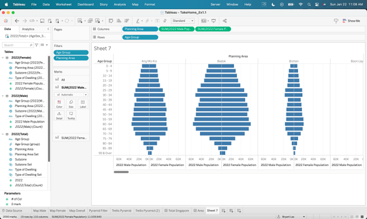
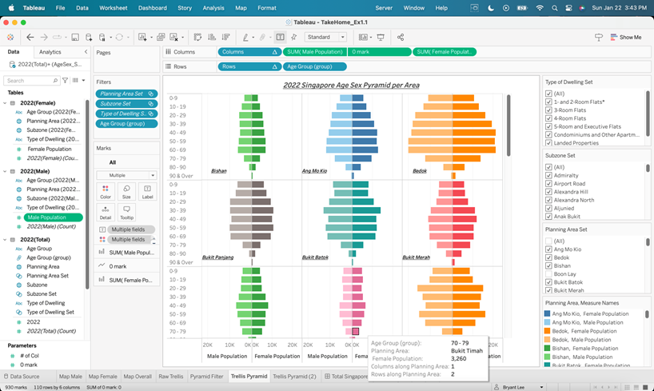
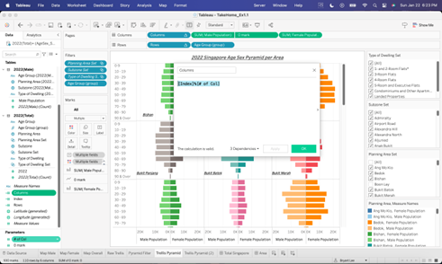
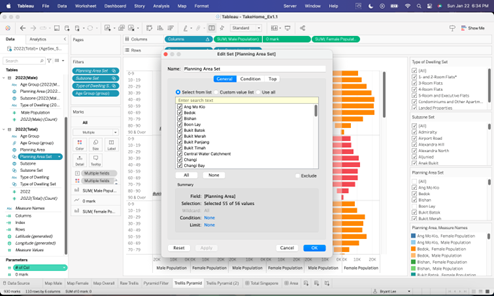
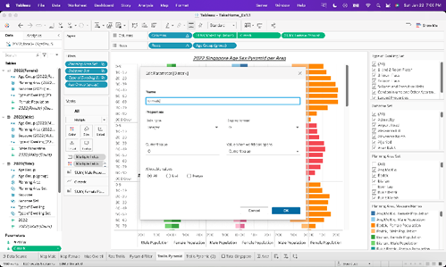
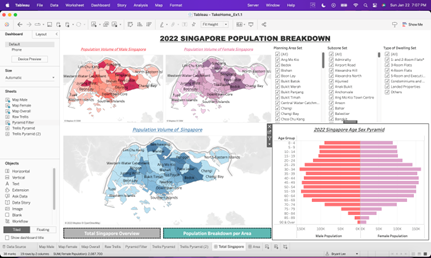
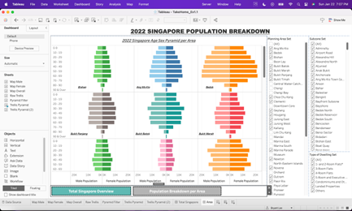

Data Visualization Makeover 01
An Exploration on Singapore’s 2022 Population through Age-Sex Pyramid
Objective
The objective is to create Age-Sex Pyramid Analytic Visualization to accurately describe the demographic of Singapore. It is a common visual representation to contrast and sub sect the population based on different classifiers, commonly by gender and age. To further illustrate the visualization, multiple Age-Sex Pyramids will be plotted by planning area using the trellis display.
The visualization is created using the Singapore Residents by Planning Area / Sub-zone, Age Group, Sex and Type of Dwelling, June 2022 (Singstat).
Data Cleaning and Preparation
To ensure that the data is properly loaded and read, the following actions will be done in the raw excel file and tableau.
| ACTION | IMAGE |
| From the raw excel file, remove the unnecessary rows as not to confuse the tableau reading |  |
Link the three sheets with the following identifiers:
Rename 2022 as population (either total, male, female) |
 |
Original Visualization
Trellis Display is a visualization framework aimed at easily presenting visual data in tables and box subdivided by category. The aim is to be able to compare and contrast the data based on the category in one window.

Though the original visualization is a trellis display, there are some issues on the clarity, aesthetics, and interactive design of the original data visualization to be explained at the next section.
Visualization Critique
The issues of the original visualization are as follows:
Clarity
a. Lack of Header and Titles
There is no title to explain the context of the visual. Users would not know the message of the visual at first glance. While an age sex pyramid is a common visual tool to indicate a split in gender population, it is not clear which population is being discussed unless the user is aware of the Planning Areas. Furthermore, though indicated as 2022 at the x-axis, it would have been clearer if it is included in the header or title. A simple title such as 2022 Singapore Age – Sex Pyramid would be enough to communicate the topic of the visual.
b. Lack of Color Labels
The color of the back-to-back horizontal bar chart is the same between male and female values. This may confuse users as it may give the wrong impression that both bars may belong to a single elongated bar. It is proposed that color for both male and female to be separate and distinct, even if in the terms of different shade.
Aesthetic
c. Poor Layout
The Trellis chart is organized horizontally and side by side and as such is visually difficult to read as there is an estimated 55 Planning Areas to scroll from. This difficult extends also to comparing multiple charts as there is only so much that can be shown per plane. It is recommended to create a table like trellis chart with rows and columns as to ease visualization and maximize space.
d. Lack of differentiating color per Area
Similar to the back to back horizontal bar, the color between planning areas are also the same. To improve aesthetic, it is recommended that Planning Areas will have the same color while male to female bars with share the same color but of different shades.
e. Too many Age Groups
The is an overall 19 age gaps that extends the chart and limits the number of planes that can be shown per window. It is recommended to group together the different age groups from 5 years to 10 years thus reducing the y axis by half and increase the number of charts that can be seen in one viewing.
Interactive
There is an opportunity to create filters to limit and focus the dashboard to a select Area, Subzone and Dwelling Type. This opportunity can allow for a more interactive and dynamic analysis.
Proposed Design of Trellis Chart

Clarity
a. Proper Titles and Headers
The Age-Sex Pyramid Trellis Chart is titled correctly, indicating as 2022 Singapore Age-Sex Pyramid per Area. Furthermore, each Age-Sex Pyramid is labeled per Planning Area at the bottom right-hand corner of each plane. These labels ensure that users can properly read and identify the overall message of the chart and category of each individual pyramid.
It may be recommended to add value labels per bar to textually visualize the amount each chart, yet this step can be avoid as the chart allows for pop out labels and values to appear when hovering over the chart. Furthermore, on the design aspect, value labels will clutter the chart and cause it to be overly noisy.
b. Differentiated Color Labels
Male-Female bar colors are identified with different shades with the lighter colors indicating male and darker as female. This ensures visual differentiation between genders with ensuring some similarity within planning area.
Aesthetic
c. 3 Column Tabular Trellis Chart
The Trellis Chart is organized to 3 columns to ensure that the pyramids are visually maximized both in terms of the number of pyramid charts in one viewing and the max value of the y-axis for the bars to be visually district.
d. Differentiating Color per Area
Colors per Planning Area is colored differently to ensure distinct differentiation per pyramid.
e. Simplified Age Groups
19 age groups are reduced to 10 age groups to visually maximize the space of the plane without oversimplifying the data points.
Interactive
The Trellis Chart can be filtered per Planning Area, Subzone and Type of Dwelling. This ensures interactive use of the chart and allow for more drilled down analysis of the data. Though there is a limitation as this chart cannot compare Subzones within the same Planning Area as can be an improvement for future developments.
Process and Development
| ACTION | IMAGE |
|---|---|
| To create the Trellis Chart, the table must be created first determining the number of columns, indicated in the parameter - # of Col |  |
Next is to define the rows and columns field with the following formula:
Then place the calculated values at the column and row fields |
 |
To ensure that the values are not inflated due to the addition of the Total category, recreate the set of the following dimensions by excluding the Total and HDB Total (for Type of Dwelling)
|
 |
Build the Trellis Chart with multiple Age-Sex Pyramid with the correct filters *remember to set the colors base on the gender and planning area |
|
| Create a 0 mark parameter to as a line with Planning Area as the label. Set the 0 mark as a dual axis and make the line transparent to set the Planning Area label |  |
Dashboard Overview
Besides the Trellis Chart, additional charts are created as well to build a better interactive dashboard. Page 1 of the dashboard is to give an overview of Singapore 2022 population while Page 2 presents the Trellis Chart and Age-Sex Pyramids per Planning Area.
| Page 1 | Page 2 |
|---|---|
|  |  |
Major Findings
Overall, Singapore has more females than males by est. 500,000 heavily contributed by the adult (25 and above) age group. Male population is 11 million while Female is 11.5 million. This is a stark contrast from previous years as there are more males in Singapore than females, average ratio at 53% male and 47% female. The shift in population shares maybe due to migration and the impact of COVID lockdown as male manpower migrating to the city state decreased during COVID and has not recovered since.
Male and Female distribution per Planning Area and age group are almost equal except for the senior population. The close distribution maybe due to the equal economic opportunity for both genders in Singapore. Furthermore, top areas that are heavily populated by males are populated by females as well.
The data may be incomplete as 26 out of 55 (48%) of Total Planning Area have either no data or negligible data. This is evident that some area’s population data is missing and is not only limited to far east and far west areas such as Tuas, but high population city center such as Orchard has no data recorded as well.
Dashboard Link: https://public.tableau.com/views/DataVizMakeover01_16743910439700/TotalSingapore?:language=en-US&publish=yes&:display_count=n&:origin=viz_share_link